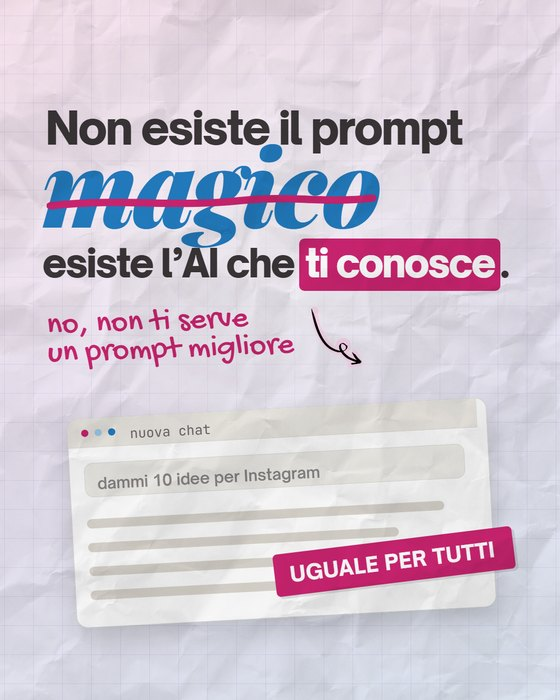
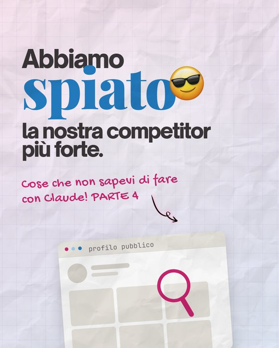
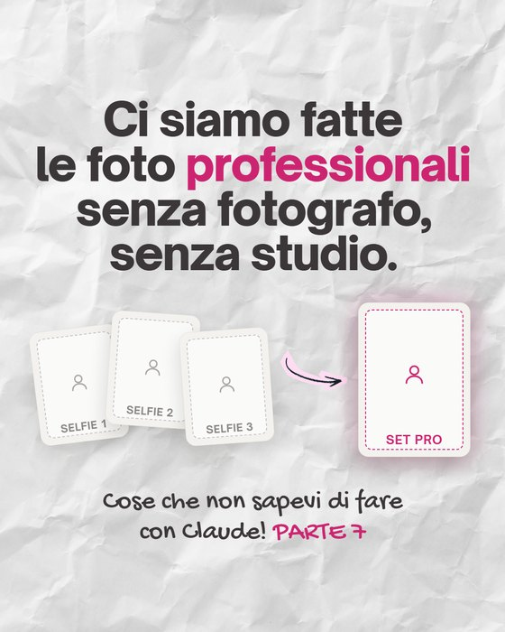

Video con l'AI, senza buttare soldi
Quale strumento collegare a Claude o a ChatGPT, cosa chiedergli e quanto costa davvero. Prima però ti do la cosa che nessuno strumento fa al posto tuo: sapere che video ti serve
 Gemma
GemmaTe lo dico subito: il montaggio non ti porta clienti
Lo scrivo proprio qui, in una guida su come fare video con l'AI, e poi ti do tutto: cosa collegare, dove cliccare, cosa chiedere. Ma le persone non ti scelgono perché il video è tagliato bene: ti scelgono perché quel video parlava a loro
Gli strumenti ti fanno risparmiare tempo solo se sai già dove vuoi arrivare. Altrimenti provi, rigeneri, correggi, ricominci, e il video «fatto in un minuto» ti prende il pomeriggio. Con l'abbonamento che intanto si consuma
Non ti dico di non usare l'AI: la usiamo ogni giorno, anche per i nostri profili. Ti dico di non usarla a caso. Si deve sentire che ci sei tu
Gemma Lenocifounder di Unlike, sui social per lavoro dal 2017usa il cervello prima dell'AI
Tre strade per fare video con l'AI
Claude e ChatGPT sanno ragionare e scrivere, ma da soli non montano: gli serve uno strumento collegato, oppure ti fanno da regia mentre monti tu. Scegli in base a cosa vuoi che esca dal tuo video, e usa quella strada per un mese prima di aggiungerne un'altra
-
1Strada 1 · con Adobela più veloce da collegare
Allega e chiedi
Colleghi Adobe a Claude o a ChatGPT, alleghi il video in chat e chiedi in italiano. Niente da installare sul computer
- Fa
- riformatta per Reels e Shorts, unisce clip, crea un highlight, ripulisce l'audio
- Non fa
- non capisce cosa dici, quindi non toglie le esitazioni
- Costa
- zero per cominciare, con l'account Adobe gratuito
-
2Strada 2 · con Remotionlivello avanzato
Il video scritto come codice
L'AI scrive il video e tu lo vedi e lo esporti sul computer: titoli, grafiche e sottotitoli animati. È il motore che usiamo anche nei nostri sistemi video
- Fa
- crea video da zero, aggiunge i sottotitoli, e lo rifai uguale ogni volta
- Non fa
- non è un editor e non taglia il tuo parlato
- Costa
- Remotion è gratis, in Claude serve il piano Pro
-
3Strada 3 · solo la chatda qui partirei io
Solo la testa
La chat legge cosa dici, decide dove tagliare e scrive gancio, scritte e caption. Poi monti tu nell'app che usi già
- Fa
- la regia: cosa tenere, come aprire, cosa scrivere a schermo
- Non fa
- non tocca il video, il montaggio resta tuo
- Costa
- zero, va bene anche il piano gratuito
La regola per non sbagliare
- Vuoi titoli, grafiche o sottotitoli animati: parti da Remotion
- Hai un video da adattare a un'altra piattaforma: parti da Adobe, ti basta allegarlo in chat
- Vuoi togliere esitazioni e ripetizioni: nessuno dei due lo fa, serve Descript, che consuma crediti (te lo spiego nella pagina di Adobe)
- Non sai ancora cosa tagliare e cosa dire: parti dalla strada 3, che è quella che ti serve comunque
Per cominciare non paghi niente. Quando e cosa vale la pena pagare: cosa costa, davvero
Prima del prompt, la scheda del video
«Fammi un bel video» lo scrivono in mille, e arrivano mille video uguali: il prompt uguale per tutti dà il risultato uguale per tutti. Quello che cambia il risultato sono quattro righe che sai solo tu. Compilale prima di aprire qualsiasi strumento, e incollale prima di ogni richiesta
- 1
A chi parla
Una persona sola, con il suo problema. Non «chi vuole crescere sui social» ma «la psicologa che ha aperto lo studio da un anno e riceve richieste solo dal passaparola»
- 2
Cosa deve capire
Una cosa sola, in una frase. Se sono due, sono due video
- 3
Cosa deve fare dopo
Commentare una parola, salvare, scriverti, andare al link. Il video si monta per arrivare lì
- 4
Come ti riconosce
I tuoi colori, il tuo font, come parli. È la parte che i template non hanno, e che fa dire «questo è suo»
Fammi un bel video con i sottotitoli
Il prompt con la schedaQuesto video è per la psicologa con lo studio aperto da un anno. Deve capire che il passaparola non basta più e alla fine commentare PIANO. Sottotitoli bianchi con la parola chiave in fucsia, niente musica di tendenza. Taglia tutto quello che non serve a questo
La scheda del video, da compilare
SCHEDA DEL VIDEO 1. A chi parla: [una persona sola, con il suo problema] 2. Cosa deve capire: [una cosa sola, in una frase] 3. Cosa deve fare dopo averlo visto: [commentare una parola, salvare, scrivermi, andare al link] 4. Come mi riconosce: [i miei colori, il mio font, come parlo, cosa non uso mai] Usa questa scheda per ogni scelta: cosa tagliare, come aprire, cosa scrivere a schermo. Se una parte del video non serve al punto 2, dimmelo e proponi di toglierla
Dove si buttano soldi e tempo
Le quattro trappole che vediamo più spesso, anche in chi i social li fa per lavoro
- 1
Quattro abbonamenti
Ne basta uno collegato bene. Ogni strumento in più è un'altra password, un altro limite, un altro rinnovo
- 2
Credere che sia un editor
Remotion costruisce video, non taglia il tuo parlato. Adobe adatta e riassume, ma non capisce cosa dici
- 3
Rigenerare dieci volte
Ogni tentativo consuma il tuo piano: una richiesta chiara costa meno di dieci tentativi
- 4
«Fammi un bel video»
Senza una direzione esce un video medio, uguale a quello di chiunque abbia chiesto la stessa cosa
Tutte e quattro hanno la stessa radice
Chiedere un video senza sapere che video serve. Il taglio è la parte più piccola del lavoro: se non hai un metodo, il tempo lo perdi lo stesso, solo da un'altra parte
Se sa di AI, ti costa fiducia
Chi ti guarda non sa quanto ci hai messo a montare il video. Si accorge però in un attimo se sembra fatto a caso con l'AI, e da lì non sta più guardando te: sta guardando l'ennesimo video fatto con l'AI. E l'ennesimo non lo sceglie nessuno
Da cosa se ne accorge
- La voceuna voce sintetica, o frasi perfette che nessuno direbbe a voce
- Le scrittesottotitoli animati come quelli di tutti, senza niente di tuo: né i tuoi colori né le tue parole
- Le immaginiclip generate o di repertorio che con il tuo lavoro non c'entrano
- Il contenutoconsigli che potrebbe dare chiunque: nessun caso, nessun numero, nessuna opinione tua
E non è un'impressione
si fida meno dei brand che usano chiaramente l'AI nel marketingKlaviyo, 2026 AI Consumer Trends Report, 8.000 persone in 8 paesi, Italia compresa
dei consumatori americani preferisce comprare da marchi che non usano l'AI generativa nei contenutiGartner, sondaggio su 1.539 consumatori negli Stati Uniti, pubblicato il 16 marzo 2026
Quindi niente AI? No
Non è l'AI che fa perdere fiducia: è quando si vede che non c'eri tu. Se prima decidi a chi parli e cosa deve capire, l'AI ti fa solo risparmiare tempo, e il video resta tuo. È a questo che serve la scheda del video
Il video è la punta dell'iceberg
Sotto ci sono le tre cose che portano davvero clienti, e nessun programma di montaggio te le dà
- Videoil montaggio, la parte di questa guida
- quello che non si vede
- Sistemai passaggi che ripeti ogni settimana, con l'AI che esegue e tu che decidi
- Stilecome appari: un linguaggio grafico e video tuo, non un template
- Strategiaa chi parli, cosa dici, perché ti scelgono
Si vede che sono fatti con l'AI?
Questi caroselli li ha fatti l'AI, dentro il sistema che abbiamo costruito per i nostri profili. Ma prima c'erano la strategia e uno stile nostro, ed è per questo che sembrano nostri e non «fatti con l'AI»



fatti con l'AI dal nostro sistema, per i nostri profili

Gli strumenti montano, la direzione no
Tutto quello che trovi qui funziona se sai già che video ti serve. Stratego è la piattaforma che abbiamo costruito in Unlike per crearti la strategia social e il piano editoriale: le domande te le fa lei, con il nostro metodo davanti. Tu resti la mente
- Il piano del mese, con formato, obiettivo e gancio di ogni contenuto
- L'analisi dei tuoi video Instagram e TikTok, letti in ottica strategica: cosa funziona e cosa correggere
- Per il tuo profilo o, se sei SMM, per quelli delle tue clienti
Ti avvisiamo appena esce


Prima impari, poi deleghi
Quando sai che video ti serve, puoi continuare da sola oppure farti seguire da noi. Non devi indovinare quale strada fa per te: te lo diciamo noi, anche se la risposta è nessuna
Pochi minuti di domande su di te, poi scegli il giorno nel calendario di Katia, del team di Gemma. Se prima vuoi leggere come lavoriamo, è qui
- Un percorso con il teamLa tua strategia scritta, il piano, le revisioni e l'assistenza in chat, per capire dove ti stai arenando
- Sistemi AI su misuraIl setup dei video e delle grafiche dei caroselli costruito sul tuo stile, oppure un agente personalizzato che fa queste cose per te e con cui parli su Telegram
- Non sai quale?Nella call Katia guarda la tua situazione (strategia, video, tempo a disposizione) e ti dice quale strada ha senso e quale no. Se non ti serve niente di nostro, te lo dice
Il riassunto da frigorifero
Il tuo setup, in cinque passi
Tutti i link, in un posto
- Claudeclaude.ai
- ChatGPT e i suoi pluginchatgpt.com/plugins
- Adobe per Claudeclaude.com/plugins/adobe-for-creativity
- Guida ufficiale Adobedeveloper.adobe.com/adobe-for-creativity
- Remotion per Clauderemotion.dev/docs/ai/claude-code-plugin
- Remotion per ChatGPTremotion.dev/docs/ai/codex-plugin
- Licenza di Remotionremotion.dev/docs/license/pricing
- Per le esitazioni: Descriptdescript.com/mcp
- Prezzi di Claude e ChatGPTclaude.com/pricing
- Strategostratego.social
Gli strumenti cambiano in fretta: se un menu non combacia con queste pagine, cerca la stessa voce con la ricerca dell'app
Istruzioni e prezzi verificati sulle pagine ufficiali il 13 ottobre 2026: questa pagina la aggiorniamo noi, il link resta lo stesso
ora vai a farti scegliere